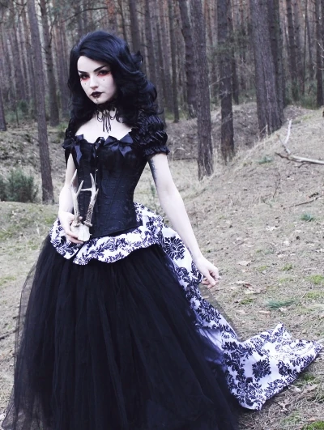
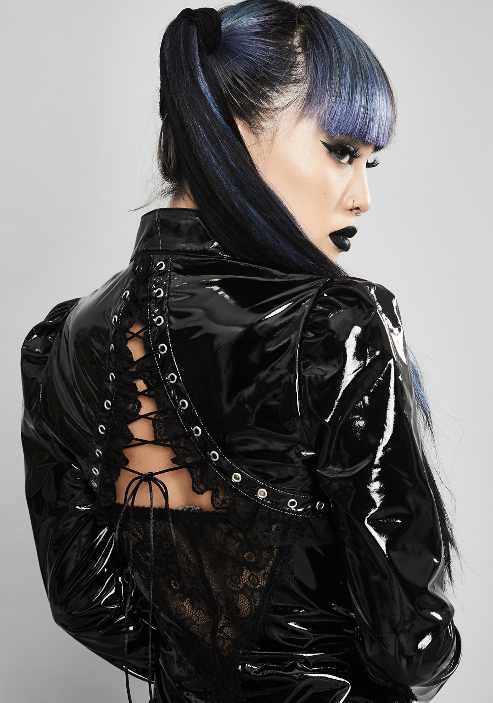

Gothic fashion and culture are hard to narrow down. With so many branches and movements within this varied subculture, it seems like everyone has a unique take on what they consider gothic fashion. However, the million-pound question that everyone wants to know the answer to is: where did gothic fashion start? First, to understand the roots of gothic fashion, we have to analyse where gothic fashion came from by examining the influences which created it. So let’s dive into all the things we love about gothic fashion, the beautiful, dark, and different origins, by exploring its cultural and social history.
The goth subculture has survived much longer than others of the same era, and has continued to diversify and spread throughout the world. Its imagery and cultural proclivities indicate influences from 19th-century Gothic fiction and from horror films. The scene is centered on music festivals, nightclubs, and organized meetings, especially in Western Europe. The subculture has associated tastes in music, aesthetics, and fashion. The music preferred by goths includes a number of styles such as gothic rock, death rock, cold wave, dark wave, and ethereal wave.[1] The Gothic fashion style draws influences from punk, new wave, New Romantic fashion[2] and the dressing styles of earlier periods such as the Victorian, Edwardian, and Belle Époque eras. The style most often includes dark (usually solid black) attire, dark makeup, and black hair.
Where did gothic fashion originate?
This is a type of fashion that emerged in the late 18th century and caught on due to the Gothic novels of the time. The gothic fashion is characterized by black color, gloomy atmosphere, and dark beauty. It also includes dark-colored clothing like long coats, skirts or dresses with corsets that were popularized by 18th century novelists like Byron and Rousseau. Gothic fashion has grown in popularity over time even though it was mainly used by men during its early days because it was associated with “darkness”. However, now women are embracing it because it helps them establish an identity as “dark” individuals.
This trend refers to the style of dress and appearance that is associated with the goth subculture. This can be seen in music videos, movies, and movies. The Goth subculture is very diverse and includes many different types of people that have different definitions of what it means to be goth. The Goth subculture has been around for centuries but it has only recently become popular in mainstream culture. It wasn’t until the early 90s when an underground scene was able to gain mainstream attention with artists like Marilyn Manson and Nine Inch Nails entering mainstream music. It is a style of clothing characterized by dark, brooding colors and dramatic silhouettes. It is also known as the “vampire” look.
As an aesthetic, Gothic Fashion has its origins in the late 18th century when it was popular among European gothic literature writers to depict the macabre and gruesome. However, it wasn’t until the 1870s that Gothic Fashion really started to gain popularity. Since then, it has continued to be associated with dark aesthetics all over the world. Even though Goth fashion has become more mainstream over time, it has maintained its dark aesthetic with emphasis on its gloomy nature and morbidity.
Gothic fashion is marked by conspicuously dark, antiquated and homogeneous features. It is stereotyped as eerie, mysterious, complex and exotic.[61] A dark, sometimes morbid fashion and style of dress,[55] typical gothic fashion includes colored black hair and black period-styled clothing.[55] Both male and female goths can wear dark eyeliner and dark fingernail polish, most especially black. Styles are often borrowed from punk fashion and—more currently—from the Victorian and Elizabethan periods.[55] It also frequently expresses pagan, occult or other religious imagery.[62] Gothic fashion and styling may also feature silver jewelry and piercings.
Ted Polhemus described goth fashion as a "profusion of black velvets, lace, fishnets and leather tinged with scarlet or purple, accessorized with tightly laced corsets, gloves, precarious stilettos and silver jewelry depicting religious or occult themes".[63] Of the male "goth look", goth historian Pete Scathe draws a distinction between the Sid Vicious archetype of black spiky hair and black leather jacket in contrast to the gender ambiguous individuals wearing makeup. The first is the early goth gig-going look, which was essentially punk, whereas the second evolved into the Batcave nightclub look. Early goth gigs were often very hectic affairs, and the audience dressed accordingly.
We couldn’t write this article about gothic fashion history without mentioning the Victorians, their lifestyle and customs. While gothic fashion has evolved extensively into modern cybergoth and pastel goth, the classic Victorian goth style is still at the heart of the movement.
So what is Victorian gothic fashion?
Essentially gothic mourning attire, Victorian gothic clothing is predominantly black but is often accented with dark hues of purple, deep reds, or greens. Due to high mortality rates, death was ever-present in the Victorian era. Whereas now society tends to view death and darkness as ‘taboo’, the Victorians considered these elements as being very much a part of their everyday lives and were very open about death. Their willingness to confront mortality led them to use their clothing to express a state of mourning. Everything was black to express the deep sorrow of their loss, then as time went on during the ‘half-mourning’ period, the colours lightened to grey tones. Men wore black gloves, a dark suit, and if they wore a hat, it was notably accessorised with a black band. For women, mourning dress was very strict with lots of black, often scratchy crape material, and widows often wore a black veil that could be changed to white later on. While men were only required to wear mourning attire for a few months, women were required to wear theirs for two years. Since it was considered bad luck to keep mourning clothes in the house after the mourning period had ended, they were often disposed of and so it was commonplace for Victorians to buy new mourning attire. Since 1994 fans of the Victorian goth aesthetic have descended on the North Yorkshire town of Whitby for the annual goth weekends which have grown to become one of the world’s premier goth events.
Who created gothic fashion?
In contrast to the LARP-based Victorian and Elizabethan pomposity of the 2000s, the more Romantic side of 1980s trad-goth—mainly represented by women—was characterized by new wave/post-punk-oriented hairstyles (both long and short, partly shaved and teased) and street-compliant clothing, including black frill blouses, midi dresses or tea-length skirts, and floral lace tights, Dr. Martens, spike heels (pumps), and pointed toe buckle boots (winklepickers), sometimes supplemented with accessories such as bracelets, chokers and bib necklaces. This style, retroactively referred to as Ethergoth, took its inspiration from Siouxsie Sioux and mid-1980s musicians from the 4AD roster like Elizabeth Fraser and Lisa Gerrard.[64] The New York Times noted: "The costumes and ornaments are a glamorous cover for the genre's somber themes. In the world of Goth, nature itself lurks as a malign protagonist, causing flesh to rot, rivers to flood, monuments to crumble and women to turn into slatterns, their hair streaming and lipstick askew".[61] Cintra Wilson declares that the origins of the dark romantic style are found in the "Victorian cult of mourning".[65] Valerie Steele is an expert in the history of the style.[65]
There were proponents of the gothic style way before Siouxie Siu, Peter Murphy, Bauhaus, and Robert Smith. Plenty of proto-goth style icons purposely used the goth aesthetic to make a statement and not simply because it was a result of that period’s sartorial conventions or social movement. These gothic fashion icons existed before the well-known ‘creators’ and deserve a lot more recognition for their contributions to gothic fashion and subcultures.
Theda Bara

Silent film star Theda Bara can be considered as an OG pioneer of gothic fashion and is known as ‘America’s first goth’. Her gothic fashion stepped outside traditional 1920s attire with her dark eye makeup, revealing yet spooky clothing, and general gothic appearance. She was the original Hollywood ‘vamp’ and created the vamp and femme fatale stereotype we can recognise today. Even her name was explicitly goth: born Theodosia Burr Goodman, the movie studio changed her name to Theda Bara; an anagram of ‘Arab death’. Her backstory was created to evoke even more mystery and intrigue. Publicity for the star mentioned her interest in the occult and claimed that she was ‘born in the shadow of the Sphynx’ and travelled to Paris to become an actress. In reality, Theda was an American born in Ohio, and well, she’d never even visited Paris let alone Egypt! She made herself the revealing costumes and wigs for her films, most of which were lost thanks to a fire at MGM studios. The surviving images of Bara have become iconic and showcase her love for long black clothing, revealing outfits, dark eye makeup, and an intense look.
One female role model is Theda Bara, the 1910s femme fatale known for her dark eyeshadow.[49][50] In 1977, Karl Lagerfeld hosted the Soirée Moratoire Noir party, specifying "tenue tragique noire absolument obligatoire" (black tragic dress absolutely required).[51] The event included elements associated with leatherman style.[51] Siouxsie Sioux was particularly influential on the dress style of the gothic rock scene; Paul Morley of NME described Siouxsie and the Banshees' 1980 gig at Futurama: "[Siouxsie was] modeling her newest outfit, the one that will influence how all the girls dress over the next few months. About half the girls at Leeds had used Sioux as a basis for their appearance, hair to ankle".[52] Robert Smith,[53] Musidora, Bela Lugosi,[54] Bettie Page, Vampira, Morticia Addams,[50] Nico, Rozz Williams, David Bowie[55] and Lux Interior[55] are also style icons. The 1980s established designers such as Drew Bernstein of Lip Service, and the 1990s saw a surge of US-based gothic fashion designers, many of whom continue to evolve the style to the present day. Style magazines such as Gothic Beauty have given repeat features to a select few gothic fashion designers who began their labels in the 1990s, such as Kambriel, Rose Mortem, and Tyler Ondine of Heavy Red.[56]
Morticia Addams
Let’s not forget the original Adams Family! Morticia, Gomez, Wednesday, Pudsey, Uncle Fester, and co. have been goth since 1938. Created by Charles Addams, the world’s first gothic family had a profound effect on culture thanks to their attitude, dark humour, and wardrobe. However, it was the matriarch of the family, Morticia, who inspired goth style with her long black dress, pale skin, black hair, and dark lipstick. Not only was Morticia effortlessly elegant and always beautifully spooky in the comics, television series, and later the movies, she also was the main reason why our next gothic fashion icon propelled goth fashion into the mainstream from the shadows.
Morticia Addams (née Frump) is a fictional character from the Addams Family multimedia franchise created by American Charles Addams in 1933. She plays the role of the family's reserved matriarch. Morticia Addams has been portrayed by several actresses in various Addams Family media, including Carolyn Jones in the television series The Addams Family (1964), Anjelica Huston in the feature films The Addams Family (1991) and Addams Family Values (1993), and Catherine Zeta-Jones in the streaming television series Wednesday (2022).
Morticia is slim, with extremely pale skin and long flowing straight black hair. She commonly wears black hobble dresses to match her hair, tightly form fitting, with a fringe of octopus-like cloth "tentacles" at the lower hem. According to Wednesday, Morticia applies baking powder to her face instead of actual makeup. In each episode, she easily allures her husband Gomez by speaking French (or any other foreign language for that matter). Morticia is musically inclined, and is often seen freely strumming a Japanese shamisen. She frequently enjoys cutting the buds off of roses, which she discards (keeping only the stems), likes cutting out paper dolls with three heads and making sweaters with three arms, collecting the mail from the hand-in-the-box Thing, and cooking unusual concoctions for her husband, including eye of newt. Her personal pet is Cleopatra, a fictitious breed of carnivorous plant called an African Strangler, to which she feeds hamburgers and various other meats.
Vampira
Vampira was the original princess of darkness. Born in 1922, Vampira was the brainchild of actress Maila Nurmi who created the character after seeing Morticia in The Addams Family comics. She hosted a late-night horror movie show on the newly born medium of television and her blood-curdling scream as she emerged from her coffin bed was beamed into the living rooms of thousands of Americans. No one had ever seen a human being like Vampira sipping on a ‘vampire cocktail garnished with an eyeball’ while bidding goodnight with ‘pleasant screams’. She’d introduce each horror film but her personality contrasted sharply with her look. She was aloof but friendly, sarcastic yet genuine, and her sharp puns were part of her charm. Her long dark dresses, heavily corseted waist, sharp eyebrows, and long straight black hair made her the antithesis of the popular rockabilly look often associated with the 1950s. Nurmi wasn’t just Vampira in costume, her interest in alternative subcultures, the occult, and all things unique shows that it wasn’t just her love for gothic fashion that made her a goth at heart. Vampira’s character and style influenced horror movie night host Elvira, who became a nineties icon in her own right by combining her Valley Girl schtick, wit, and the goth aesthetic.
VICTORIAN GOTH
A type of goth that focuses on period wear from the Victorian era. Similar to Steampunk, a lot of vests, bustles, and bustiers are used. These types of goths tend to be more period accurate and many are seen with non-dyed hair to keep that accuracy.
Gothic Victorian (sometimes called neo-Victorian) is a modern fashion movement that reinterprets certain aspects and fashion facets of Victorian culture, putting a twist on the old style.
The hallmarks of Gothic Victorian fashion are:
- Favorite time period: 1850 onwards (and some medieval, renaissance, and baroque influences)
- Bustles, hobbles, and full skirts
- Corsets and cinchers
- Trench coats, boleros, and military jackets
- Parasols
- Hats, especially top hats (often tiny)
- Tall boots and high heels
- Bones, roses, spiders, crystals, and blood
- Stripes and plaid
- Parasols, gauntlets, and gloves
- Curiosities and mementos mori
- Heavy ornamentation and layers
- Often used colors include black, red, and jewel tones
- Often used materials include satin, beads, velvet, and lace
Gothic Victorian,a sub-genre of goth or gothic style, flirts with the darker side of life. It dwells on tragic romance, the mysteries of the human mind, and the fantasy world of nightmares. The most mainstream examples can be found in Edgar Allen Poe’s tales, almost everything Tim Burton has created over the years, and the unique poetry of Emily Dickinson. Everything may seem black, grey, and red all over, but Gothic Victorian embraces the beauty of the sad and the fun of antique fetishes. It takes inspiration from the Victorian period, but doesn’t adhere very strictly to it, mixing in modern necklines with puffed crinoline skirts. Not all Gothic Vicotiran fashion is dark. Clothing is sometimes white, pink, or soft blue to display a ghostly or innocent soul. Gothic Victorian lets you explore the two sides of you personality you usually have to hide– your romantic side and your wicked side– all while looking amazing!
Gothic Victorianism is known for it’s fascination with love and death. Victorians had symbols for nearly everything, including snakes for eternal love and anchors for loyalty and hope. They also had elaborate mourning procedures that involved symbolic items such as veils and mourning jewelry. Sentimental and mourning jewelry hold a special place in my heart. Pieces are often made from human hair woven into brooches, necklaces, bracelets and more. The tradition of weaving hair into jewelry began in the 17th century with Stuart Crystals and grew throughout the 18th and 19th centuries until the Edwardian era. Mementos mori (“Remember your mortality”) have been around since ancient times, but became especially popular during the 15th century. Gothic Victorians still employ updated versions of mementos mori, including skulls, angels, crosses, and relics.
The “gothic” part of Gothic Victorian refers to it’s use of what I like to call the “harmonious grotesque.” There’s always something a little unsettling about gothic fashion, but that little twinge of dystopic strangeness really enhances the allure! I love Gothic Victorian style, especially how dark, yet appealing it is. It’s perfect for those of us who love being romantic, but can’t stand being saccharine. It’s bittersweet and beautiful!
STEAMPUNK
In a broad sense, Steampunk could be called a cultural movement. It combines the aesthetics and technology of the 19th century with futuristic elements. It is sometimes referred to as science fiction from the past or as retrofuturism. Its literary and audiovisual works display particular stylistic codes, mixing gears, cogs, and other mechanical elements with raw materials like copper, steel, and leather. All the technological developments are based on steam energy, giving a singular character to these creations. Steampunk fans are known to be creative and assertive in their style.
This style originated from a sub-genre of science-fiction that combines Victorian lifestyle with industrial machinery powered by steam. The premise assumes that new energy was never invented and, all the Victorian gadgets that were planned to be powered by steam, became real life invention.This type of fiction is seen a lot at conventions-giving this style a big cosplay base, but many have taken it as a personal day-to-day style as well.
Steampunk, a World of Steam
Steam is a central element of steampunk. The technology featured in this universe is generally just as advanced as that of our modern world, but it uses steam as its energy source instead of electricity, gas or oil. As a result, steampunk technology takes on a retro look reminiscent of the Industrial Revolution era.
HOW TO ASSOCIATE GOTHIC AND STEAMPUNK?
Through the definition of Gothic and Steampunk, it is noticed that these two genres are different on a number of points. However, gothic-style enthusiasts are drawn to Steampunk culture and aesthetics. In fact, a great common point unites them: the desire for freedom and self-expression. Since the gothic steampunk community is quite creative, they do not hesitate to mix the two genres by wearing steampunk goth clothing and completing their look with steampunk goth accessories.
STEAMPUNK GOTH CLOTHING FOR MEN AND WOMEN
The steampunk gothic style is characterized by the use of dark colors, including black, brown, or purple. In addition, lace, leather, and other materials are the main materials used to design outfits.
Steampunk goth clothing reflects the romanticism and fantasy of the Victorian era. If you plan to combine these two genres as a woman, you can opt for a vintage Victorian dress in black color or a strapless and retro corset.
These days, steampunk men are increasingly interested in the gothic style. If you are going to adopt this style, you can bet on 3-piece suits with a dark-colored shirt, a gothic jacket decorated with gears, a gothic style coat, a leather jacket, etc.
The fashion evolved to include mainly Victorian-style dress overlaid with gears, goggles, gadgets, and pouches but, instead of all black, this style includes a lot of browns and rich warm colors to reference brass, leather, and wood. It has a very utilitarian feel while being dressed in refined clothes like long dresses, waistcoats, blouses, lace, and tophats.
A lot of the fiction is based around invention and adventure so there is also a preoccupation with sea and flying themes. The makeup and hair is usually seen to be minimal and reflect the time period because the focus is usually on the dress.
GOTHIC STEAMPUNK ACCESSORIES
To make your outfit the most complete and in line with the spirit of the Steampunk Gothic style, you need to complete it with accessories. Gothic steampunk fashion often incorporates large hats decorated with feathers. The most characteristic accessories are embellished with clock gears and machines.
Despite their differences, the gothic and Steampunk genres can be combined without any worries. If you want to honor them, just mix steampunk and gothic clothes and accessorize them properly. The result will be magical!
But steampunk also has a wider countercultural presence. Steampunk literature has grown so vast that it has developed its own subgenres, from alternate histories and social commentary to graphic novels and erotica. There are steampunk bands, and steampunk conventions draw thousands of people annually to far-flung cultural centers such as Atlanta and Seattle, as well as to less likely locales such as Bloomington, Indiana, and Lafayette, Louisiana. Steampunk also has an international footprint—the French, in particular, have a thriving steampunk community, including a theme park in Nantes. Steampunk can figure as literary trope, DIY craft, or mainstream fashion. Moreover, besides its striking visual characteristics, we might also consider steampunk a novel and popular way of “doing” history.
Defining steampunk is difficult, however, eluding even committed practitioners. To some, it is primarily an underground movement, perhaps with anarchist leanings (hence, the “punk” in steampunk). Detractors often dismiss it as an ephemeral consumer trend.
ROMANTIC GOTH
This style is very similar to Victorian goth but focuses on the Romantic Era instead. The fashion includes a lot of belle sleeves, lace, high necks, blouses, and long layered flowy skirts. There is a focus on romantic imagery found in poetry such as roses, ravens, the color red, architecture, gardens, and cemeteries. This style has a focus on art, poetry, solitude and creativity.
Drawing inspiration from the late 1800's with references to mourning clothing – romantic goth comes as the exact opposite of traditional goth, prefering long intricate gowns, coats, velvet and veils to the Punk inspired fishnets & studs.11 dec. 2020
A popular sub-genre of gothic style, romantic goth takes influence from the romantic era of 1800-1850, which embraced imagination, feelings and emotion. These qualities made their way into art, music and literature, which are key interests of the modern romantic goth. This era of romanticism offered an escape from the industrial revolution and all the stress and pressure surrounding it. The modern romantic goth style really took off in the late 80s and early 90s. The release of The Addams Family in 1991 had goths fawning over witchy matriarch Morticia Addams and her beautiful floor-length gown. Plus, the music of the time was heavily romantic goth-inspired, with bands like The Cure, Echo & the Bunnymen and Depeche Mode in their prime. Today, romantic goth remains popular thanks to its timeless appeal and historical influences.
GOTHIC LOLITA
This style became highly popularized in Japan and combines a cute lolita style of dress with dark colors and spooky themes. Gothic Lolita style works with a lot of doll-like clothing with lots of ruffles, puffy sleeves, and gathers. Aprons, gloves and stockings are added to give a refined but cute look.
Common motifs in Gothic Lolita often include crosses or religious themes, bats, skulls, coffins, chandeliers, deep red roses, and castles. Darker colors, such as black, navy and royal blue, maroon, crimson, and deep purples are all common in Gothic Lolita. Black and white color combinations are somewhat taboo, but can be and have been done tastefully.
TRAD GOTH
In the word of fashion, any variants fall under the category of “goth,” - and one of the most famously popular versions is trad goth. Yet, plenty of people nowadays don’t know what “trad goth” actually means. And with so much chitter-chatter about this variant on social media, it makes the issue that much more confusing. If you’re curious about what trad goth is and what the trad goth style revolves around, keep reading. Below, you’ll find all the essential information about trad goth - including how to be trad goth and the difference between trad and mall goth.
Traditional Goth or Old-School Goth are popular names for the first wave of the gothic subculture that emerged in the UK in the late 1970s and early 1980s.
Also known as “traditional goth”, this style refers to the original 80s goths and how they pioneered the gothic. The fashion typically included very dramatic black and white makeup that extends upward toward the temple, teased long hair- sometimes in a mullet, and layered dark clothing that is usually pretty covering.
Horror movies, books, and music served as inspiration, and their gloomy style still impacts the subculture today. Traditional goth music is distinguished by its atmospheric, melancholy sound, which often uses synthesizers and drum machines extensively.
In the word of fashion, any variants fall under the category of “goth,” - and one of the most famously popular versions is trad goth. Yet, plenty of people nowadays don’t know what “trad goth” actually means. And with so much chitter-chatter about this variant on social media, it makes the issue that much more confusing. If you’re curious about what trad goth is and what the trad goth style revolves around, keep reading. Below, you’ll find all the essential information about trad goth - including how to be trad goth and the difference between trad and mall goth.In contrast, traditional goth attire is mostly black, with romantic and Victorian-inspired elements like ruffled dresses, corsets, long flowing gowns, lace, and leather. A prevalent trait is also a lot of black makeup.
Traditional goths often have interests in poetry, art, literature, clothing, and music, such as works by H.P. Lovecraft, Anne Rice, and Edgar Allan Poe. They enjoy debating philosophical issues like the purpose of life, death, and the afterlife.
CORPORATE GOTH
There comes a time in every goth’s life when they grow up and have to go out and do the “adult thing” - you know, like getting a job to pay for the bills. Does that mean you have to swap your skulls and bats for boring workwear?
Not at all!
For those entering the workplace where “business attire” is required, let me introduce you to corporate goth - or, as many goths like to call it, “corp goth.”
Corporate goth is precisely how it sounds - business attire with a dark, gothic twist. It’s meant for older goths who have to join the workforce but don’t want to give up their alt aesthetic. After all, for hardcore goths, it’s not a “phase” - it’s a lifestyle. And just because you have a job doesn’t mean you have to fall in line and give up your unique appearance and love of the morbid.
It can be hard to picture what a corporate goth might wear. After all, the term “goth” conjures images of spooky individuals dressed in skimpy and/or creepy clothing items - not exactly the clothing labeled as “office wear.” But the right get-up can be the perfect blend of macabre and professional. You just have to utilize some of these items:
- Black Blazer
- Black Skirts - For more lax environments, don’t hesitate to throw on a plaid skirt. It offers a bit more edginess than a plain black skirt.
- Dresses and Tights - You can stick to wearing more basic, corporate-friendly black dresses if you prefer. Or, you can add some uniqueness and personality to your wardrobe with a black striped dress.
- Pants - Pants with a pinch of lacy detailing are a great choice too. This is an excellent way to show off your goth vibes without being too noticeable.
- Classy Shirts - Many “gothic” elements are suitable for the office. For example, Victorian-era clothing items are professional and elegant, perfect for corporate offices.
- Stripes - Many goths, including corp goths, prefer to keep their clothing black from head to toe. And that’s perfectly fine! But for those days when you want to break up the monotony, stripes are an excellent way to go.
- Accessories - Whether it’s a handbag, cross choker, or bat earrings, accessories allow you to add more gothic personality to your style without going overboard.
- Footwear - Corp goths almost always reach for black boots for the simple fact that they’re somewhat professional yet still on the gothic spectrum. A set of stylish chunky heels can also do the trick!
Corporate Goth isn’t just about the way you look - why not create a spooky environment for yourself too so you feel more at home? Decorate your desk with a crystal ball, Skull Planter or a catch-all dish for your nick-nacks. Stay caffeinated with your favourite spooky mug, or go the hydrated route with a badass cold brew cup. We also love to keep some crystals on our desks at KILLSTAR HQ - Obsidian is great for protection and absorbing negative energies from any Karens you work with, while Tiger’s Eye helps you focus all day long.
CYBERGOTH
This style is closest to cyberpunk but whereas cyberpunk is mainly applied to cosplay and science fiction, cyber goth is mainly applied to an industrial rave-type music scene. The fashion is somewhat similar and also features bright neon colors paired with black and uses technological themes such as cyborgs and circuit boards as well as a focus on toxic waste and poison.
A defining difference, however, is that cyberlocks are popularized in this subgenre which are a type of plastic dreadlock and also more ravewear/ festival clothing is used (fuzzy legwarmers, stand alone hoods, miniskirt tutus, light-up accessories etc.)
The cybergoth style didn't appear until the 90's and made a significant impact with it's mix of black & neon colors ! This form of Goth referes to a high-tech, post-apocalyptic future. Think LED's, cybernetics, respirators... The biohazard symbol is highly featured in this substyle so behind a very rave-y style might lie a form of social commentary about technology and it's hasards ? Googles, platform boots, vinyl and hairpieces of dreads and tubing are a staple in this style on men and women alike. Usually a cybergoth outfit consists of all black clothing with one bright accent color. The industrial substyle has similar codes but takes a more pessimistic outlook on the futurist inspiration – it takes a more distopian turn as we'll frequently see elements taken from the military wardrobe, from combat boots to cargo pants.
GOTHABILLY/ PIN-UP GOTH
This is a type of goth that combines 50s-type dress- calf length dresses with long petticoats, halter tops, and high waisted bottoms with dark colors and retro creepy prints. Many maintain a more simplistic look with retro makeup and hair and will opt for a kitten heel or pumps instead of a chunky goth boot.
Motifs ordinarily seen in Gothabilly fashion are cherries, dice and playing cards, flames, animal prints, tattoo-inspired designs, polka dots, sugar skulls, swallows, zombies and pin-up girls (or simply zombie pin-up girls) – retro and kitsch with an added dark twist. For men and women tattoos are often common, featuring pin-up girls, flaming skulls and playing cards. Gothabilly women could be described as “Living Dead Dolls” and can often be seen in pencil skirts, heels, red lipstick and seamed fishnet stockings; hair may be styled with victory rolls, quiffs and Bettie bangs – the entire appearance, for women, could be summed up with “Morticia Addams meets Bettie Page.” Gothabilly males may sport creeper shoes, cowboy boots and hats, morning coats and dusters. Fashion influences include The Cramps themselves, Fields of the Nephilim (a 1980s Goth band famous for their dusty cowboy gear) and The Gothic Cowboys.
Gothabilly fashion consolidates more colour than many styles of Goth fashion that are frequently black and white-oriented, sometimes with hints of red and grey – from brightly coloured leopard print to red or pink 1950s cardigans. It can also be a more masculine look for the males – as opposed to the frilly shirts of romantic goth or the ripped tights sported in deathrock. As Voltaire points out in What Is Goth?, Gothabilly is a good look for darkly-inclined gentlemen who do not wish to dress like “fruity vampires.” Shirts with the sleeves ripped off, black denim, tattoos of buxom women and rockabilly quiffs galore.
Gothabilly interests include hot rods and hearses, horror B-movies and vintage fashion. Gothabilly incorporates that tongue-in-cheek humour found in the music – Auxiliary Magazine says, “Whether it is putting mini top hats on taxidermy bats or planning a creepy tiki party, it is all about dark humoured fun.” The music blaring from a Gothabilly’s headphones is likely to include bands such as those named above, as well as Cult of the Psychic Fetus, Vampire Beach Babes, The Horrorpops, The Phantom Cowboys, Zombie Ghost Train, Ghoultown, Dead Sea Surfers, The Coffinshakers, Pink Hearse, and the Surf Sluts.
BURLESQUE/ CABARET
This is an offshoot of victorian goth that goes for a more theatrical stage look- sometimes verging on carnival. There is more of a focus on lingerie, pinned up high-low shirts, corsets, silk and robes. This style tends to be more provocative and sensual than normal Victorian goth.
Cabaret Goth is similar to Steampunk in that it is another subtype that combines modern looks with those of an older style. Cabaret Goth is also known as “Burlesque Goth,” as it takes strong influences from vaudeville performances. Members of this subtype want to be both sexually attractive but still very tasteful in their appearances.
Their attire has a 50s vibe to it, though with darker colors. Fishnet and plumes are a must for the ladies, while suspenders and fedoras are a must for the men (“Different”). Once again, this subtype is not linked with a specific type of music, though one could argue that they may enjoy 1950s-styled music.
WITCHGOTH/ WICCAN/ PAGAN-
Unlike other substyles, this type of goth developed from a belief system that revolves around astrology and magic/witchcraft. This can also include voodoo and other tribal/ indigenous goths who focus on shamanism and the spirit. The fashion for this can differ in amount of decoration but always follows witchy and celestial themes. There tends to be a lot of wide-brimmed hats, bell sleeves, sigils drawn on the skin, forehead decoration, crystal jewelry, scarves, and veils.
Obviously, to dress like a witch, the first thing you’ll want to consider is whether your clothes give off a magickal feeling! Do they feel powerful, mystical, and romantic to you? Maybe it’s the way the fabric flows off your body, maybe it’s how the colors pop, or maybe it’s got a shimmer to it…Whatever it is, the clothes you’ll want to wear will make you feel like you’re glowing from the inside out! From the deep colors to the soft, romantic fabrics, to the carefree silhouettes…This dark but fairytale-esque aesthetic is core to creating a witchy style. It will empower you to embrace all aspects of yourself–including the parts you tend to hide in the dark. Whether you’re spending your time brewing up potions, strengthening yourself with your crystals, seeking wisdom from your tarot cards, or just enjoying some time out in nature…A witchy outfit is bound to make you feel strong and enlightened to the little bits of magick found in simple day-to-day moments.
This fashion style is powerful, magical, dark, and dramatic. Inspired by witches, both real and from fairytales. For fierce and romantic individuals with great curiosity, serenity, love for nature, and humble understanding of their strengths and weaknesses as well as the depths and beauty of life and death.
FETISH-GOTH
This style is where goth meets BDSM culture. The fashion includes a lot of leather, latex, corseting and collars, however, it does not necessarily have to be sexual. A lot of these can be worn for just aesthetic reasons.
There are no specific music genres that appeal to the entire type, but generally anything fetish related is something they might like. (And there are many bands that write fairly interesting songs.) It's known that industrial and 80's new wave might be a little more kinky than other types of music. The Goth subculture isn't one to discriminate others' expressing of sexuality, so many times, there are events that will appeal to all types, including Fetish Goths. There may be a specific night dedicated to them at Goth clubs, as well.
The Fetish subculture was always very close to the to the Goth movement, but some people like to step it up a notch. This substyle of Goth came about by people who liked wearing more leather, PVC and BDSM themed clothes. Fetish Goths will enjoy big boots & heels, tight vynil or leather clothing such as skin-tight pants and corsets. Chokers are a staple for the perfect Fetish Goth outfit. However – don't be mistaken. Fetish Goths might not be that freaky in the bedroom... it could just be an aesthetic they enjoy, so hands off !
MEDIEVAL GOTH
This is a type of goth that involves medieval and historical imagery like churches, castles, crosses, mythology, dragons, magic etc. The fashion will usually combine long skirts, corsets, blouses with dark aesthetics. Fairy Goth is a subset of this that will take a whimsical, magic, fantasy approach to this and Vampire Goth will take a sleeker, sexier, more refined look- usually focused on cursed and holy imagery. Creature aesthetics can also be added to this style such as elf or goblin ears, horns, wings, or tails to mirror the mythological fascination.
The medieval goth style is a distinctive mix of gloomy, brooding aesthetics and historical elements inspired by the Dark Ages. Dark, textured fabrics like velvet, lace, and leather are usually used when dressing in medieval gothic style. Corsets, tunics, capes, and long, flowing gowns and robes are examples of clothing styles.
The aesthetic often includes chokers, crowns, extravagant jewelry, and elaborate headpieces. Focusing on dark and romantic themes like vampires, witches, and medieval mythology, this fashion sometimes combines parts of Victorian or Edwardian designs with medieval-inspired clothes.
Just like Victorian fashions inspire the Victorian Goths, the Medival fashions do the same for the Medival Goths. There's more than just an 80's music and fashion when it comes to the start of Goth; it goes to the time of medival cathedrals whose architecture was dubbed as "Gothic". For this reason, it's no wonder that many Goths enjoy the medival aesthetics, both in fashion and in buildings. This type generally loves the old tales of dungeons and dragons, knights and wizards, and loves the old buildings, lore, and history of the medival times. Renaissance fairs are a place where these Goths can be as elaborate with their clothes as they want, a perfect place for them to run wild. These Goths aren't limited to only medival clothes, typically blending in elements of Celtic origin and other old civilizations as well. Folk music and metal like Korpiklaani may be right up their alley, along with old chants and songs.
GLAM GOTH
This subset takes inspiration from glam rock- people like David Bowie- with deep v-necks, teased hair, feathers, leather and fur. It has a more theatrical costume type of feel similar to the characters in Rocky Horror Story. Animal prints, sequins, and colored leather were all deviations from average goth styles, but used in this one to enhance dramatic flair.
The key to this look is a mystery, dark colors and a beautiful array of laced fabrics and accessories. The Glam Goth look is a wonderfully expressive look that is easy to customize and personalize, which is probably why it has become so popular in recent years. Unlike the classic gothic look, Glam Goth allows girls to express not only an alternative personality but their femininity. This makes the intriguing world of the gothic instantly accessible even for girls who would not associate themselves with the Goth culture.
NU-GOTH-
This is a newer genre of goth dress that uses black and dark colored versions of everyday-styled dress. It is a more casual and sleek version of goth that is inspired by a lot of anti-fashion and is less overstated and decorated compared to most other goth styles. Even though there is a more minimal and modern edge to this goth, most of the clothing still plays homage to older goth interests and traditions- including lots of occult and celestial themes.
It’s rooted in and influenced by Trad Goth to a degree, but some in Nu-Goth style do consider certain musical genres to be Goth which have very little connection to what is accepted as Post-Punk-originating. Despite this, many other Nu-Goths do enjoy originating Goth music. For this reason, they are not discounted from the scene by Trad Goths.
Besides music, they are very different in their visual aesthetics than most Batcaver/Trad Goth types. Batcaver/Trad Goth is visually very broad, taking inspiration from all forms of mythology, Catholic imagery, and Gothic types of poetry, literature, and film. Nu-Goth imagery and fashion focuses far more heavily on the romanticization of witches, paganism, and the occult (even in comparison to the equally influenced Deathrock and Hippie Goth). This mix of sleek, modern clothes with witch/pagan images visually gives them more in common with Pastel Goth.
Nu-Goths are known to welcome Baby Bats & Mall Goths to their subculture and are more lenient on the music knowledge compared to their Trad Goth counterparts. As previously stated, many Nu-Goths (but not all) believe the visual/fashion characteristics of Goth are more important than the music genre. Interestingly, while there is a clear stylistic difference between the two, Trad Goth fashion as it began in the 80s was extremely broad and undefined. Therefore, there is no reason that someone could not be Trad Goth and Nu-Goth at the same time or why they could not mix visual influences.
DEATHROCK
This goth aesthetic is a combination of punk and goth styles. Deahrockers are typically more made-up punks that dress in mainly black and wear makeup similar to trad goths. This style is hallmarked by shaved heads, ripped clothing, mohawks, fishnets and lots of DIY clothing with spooky aesthetics.
Deathrocker goths are often seen as the missing link between goth and punk since they are more closely tied to traditional goths than any other subgroup.
True Deathrock music is known for having a more loud, punk-like sound incorporated with a more theatrical presentation (compared to post-Batcave Goth) and lyrics often referencing horror movies and other sci-fi themes. Some of it even crosses into Rockabilly or Psychobilly, such as The Birthday Party, The Gun Club, and especially The Cramps. Horror Punk is also beloved by many in the scene (particularly The Misfits).
Metalhead
Another variation includes the “Metalhead”; some debate on whether or not they are truly Goth, as they did with the Marilyn Manson controversies. However, Metalheads do have enough similarities with other Goth subtypes to be considered Goth themselves, at least in this thesis. They adore all types of metal music, especially dark metal and symphonic metal, as they generally fit more with Goth interests. Dark leather seems to make up much of their wardrobe, along with other “spooky” accessories. Metalheads can be compared to “Deathrockers,” which are Goths who take more from Punk than Goth as far as music goes, but aesthetically fit in more with the Goth subculture.
Like Metalheads, Deathrockers are extremely passionate about their music, which contains darker twists of Punk music without the gentle twist on the music itself, which first-wave Goths enjoyed. Harder 80s Goth rock as well as more modern Punk rock, Horrorpunk and Psychobilly are favorites of Deathrockers.
CASUAL GOTH
They are less flashy and showy with their attire, and many Goths revert to this type when staying home or simply are not up to spending over an hour on their appearance before going out. Despite the fact that they are dressing down, they still stick to mostly dark colors, and other aspects of their appearance can still help identify them as Goth: dyed and/or teased hair, piercings and tattoos are some such aspects.
They may also wear Goth band t-shirts and may include accessories from their more eccentric outfits (Balanck). A Casual Goth appearance is very convenient for running errands or going to school or work, in order to save time in the morning and not be a distraction to your classmates or coworkers.
Casual goth is, as the name suggests, a more casual take on traditional gothic fashion. Despite the preconceptions you might have, it’s perfect for everyday wear, and it allows you to incorporate gothic style into your look without going full-on dark mode. Casual goth is all about simplicity and elegance. The key to nailing the look is to focus on quality over quantity. A few well-chosen pieces will go a lot further than a bunch of cheap tat from the local Halloween store. One of the great things about casual goth is that it can be as dressy or as casual as you want it to be. It’s perfect for everything from a day at work to a night out on the town.
If you walk away from this with one lesson, it should be that the goth style doesn’t mean committing fully to black for the sake of it. Casual goth is a great style for anyone who wants to add a touch of darkness to their wardrobe. It’s also perfect for people who want to experiment with different styles without going too crazy. So, give it a try. Maybe a little black is exactly what’s been missing in your life.
MALL GOTH
These types of goths were seen in the early 2000s as posers who only listened to nu-metal and only copied goth fashion. They would hang around at malls- especially in front of stores like Hot Topic and are the closest to emo styles. The fashion is reminiscent of early 2000s style but with a darker punkier twist- similar to that of Avril Lavigne. A lot of low-waisted bottoms, miniskirts, colored plaid, arm warmers, and cargo pants were used and paired with characters like Hello Kitty or other Sanrio characters.
"Mall goth" is derived from the words "mall" and "goth", referencing how many participants of the subculture would often spend time at shopping malls. In particular, it often references their buying of items from Hot Topic. The term began as pejorative, connoting solely being interested in goth for its fashion, rather than the subculture itself, similar to the use of poseur. Marilyn Manson and Amy Lee were influential upon the culture's development. According to Adolescent writer Angelina Zaphyria, it began as a fusion of the cultures of the existing goth, third wave emo and nu metal movements, however according to Fashion writer Isabel Slone, it "combined the hallmarks of punk, goth and metal subcultures".
PASTEL GOTH
Pastel Goth is strikingly different from other forms of Goth in that their favorite color is not black, but rather bright and light colors like pastel pinks and purples. They take elements from metal and death rock scenes such as pentagrams, inverted crosses, skulls and spikes, but then combine them with flowers and bright colors. They have been described as “sickeningly sweet” or “creepy-cute.” They have an appreciation for retro and 80s Goth music, along with more modern bands that have mixed cuteness in with their creepiness.
Completely different from anything else on this list, pastel goth combines gothic styles of dress but instead pairs them with very bright and pastel colors. This style is sometimes characterized with overdecoration as it relies a lot on heavy accessories including colors, beaded bracelets, and plastic hair clips. There can also be babydoll, cartoon or other child-like themes. Sometimes this style bleeds over into lolita and has a lot of influence in Japan.
The Goth Scene Today and Its Impact on the Fashion Industry
The Goth Scene Today and Its Impact on the Fashion Industry Goth is a subculture with its own fashion, music, and lifestyle trends. The scene has been around since the late 1800s, but it was not until the 1990s that it became popular in mainstream culture. It was around this time that many fashion brands started to use Goth imagery in their marketing campaigns. The popularity of Gothic fashion has led to various other fashion labels following suit. However, while some designers borrow from Goth style for inspiration, others find ways to incorporate these elements into their own designs that are more accessible to broader audiences. For instance, brands like Dolce & Gabbana started using Gothic-inspired makeup products even though they are mainly focused on high fashion clothing production. The Goth subculture has been around for centuries. After it first emerged in England, the Goth subculture soon became more mainstream. This article will explore how the Goth subculture impacted fashion and its continued impact on society today. It’s hard to imagine that the Goth subculture has only been around for a little over 30 years. The subculture is still going strong, with its own fashion and music scene. The popularity of the subculture has also impacted the world of fashion at large, with many designers looking for inspiration from Gothic artists and style icons.
Goth is a subculture, fashion style, and musical genre which emerged in England during the early 1980s. It began when members of the English post-punk movement began to dress and behave like their favorite horror movie characters. The clothing styles and music of the gothic bands helped define this look for people who were looking to express themselves outside of their everyday identities. The Goth Scene today has evolved to be much different than it was back in the 80’s. It has shifted to a much more mainstream fashion scene, which has contributed to the decline of the Gothic subculture. Many people are worried that Gothic culture will not survive due to its declining popularity. This is because many of the subculture’s values are no longer prevalent, such as tattooing and piercings. However, many goth children now see themselves as individuals who are not limited by these values and are embracing these new ideas that were once considered too mainstream for them to wear or experience.